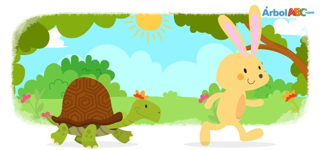

The Tortoise and the Hare

Once upon a time there was a hare who spent all day bragging about how fast he could
run. Tired of hearing him boast, the tortoise, challenged him to a race.
“You must be kidding!” said the hare laughing. “I am so much faster than you.”
“We shall see,” the tortoise replied.
The next day, the animals of the forest gathered to watch the race. Everyone wanted to
see if the tortoise could beat the hare.
The bear started the race yelling “On you mark, get set, go!”
The hare immediately raced ahead, running faster than ever. He looked back and saw the
tortoise was only a few steps away from the starting line.
“Foolish tortoise, ” thought the hare. “He is so slow. Why would he want to race me if
he has no chance to win?”
Confident that he was going to win the race, the hare decided to stop in the middle of
the road to rest under a tree. The cool and pleasant shade of the tree was very relaxing, so much so that
the hare fell asleep.
Meanwhile, the tortoise continued walking slowly, but steady. He was determined not to
give up. Soon, he found the hare sleeping peacefully.
The tortoise was winning the race!
When the tortoise approached the finish line, all the animals in the forest began
cheering with excitement. The noise woke the hare, who could not believe his eyes: the tortoise was crossing
the finish line and he had lost the race.
Moral: Do not count you chickens before they are hatched.
La tortuga y la liebre
Había una vez una liebre que pasaba todo el día alardeando de lo rápido que podía
correr. Cansado de escucharlo jactarse, la tortuga lo desafió a una carrera.
"¡Debes estar bromeando!" dijo la liebre riendo. "Soy mucho más rápido que tú".
"Ya veremos", respondió la tortuga.
Al día siguiente, los animales del bosque se reunieron para ver la carrera. Todos querían
ver si la tortuga podría vencer a la liebre.
El oso comenzó la carrera gritando "¡En tu marca, prepárate, vete!"
La liebre corrió inmediatamente hacia adelante, corriendo más rápido que nunca. Miró hacia atrás y vio el
la tortuga estaba a solo unos pasos de la línea de partida.
"Tortuga tonta", pensó la liebre. “Es muy lento. ¿Por qué querría correr conmigo si
no tiene oportunidad de ganar? "
Confiando en que iba a ganar la carrera, la liebre decidió detenerse en medio de
El camino para descansar debajo de un árbol. La sombra fresca y agradable del árbol era muy relajante, tanto que
la liebre se durmió.
Mientras tanto, la tortuga continuó caminando lentamente, pero estable. Estaba decidido a no
rendirse. Pronto, encontró a la liebre durmiendo pacíficamente.
¡La tortuga estaba ganando la carrera!
Cuando la tortuga se acercaba a la línea de meta, todos los animales en el bosque comenzaron
animando con entusiasmo. El ruido despertó a la liebre, que no podía creer lo que veía: la tortuga se estaba cruzando.
la línea de meta y había perdido la carrera.
Moral: Do not count you chickens before they are hatched.